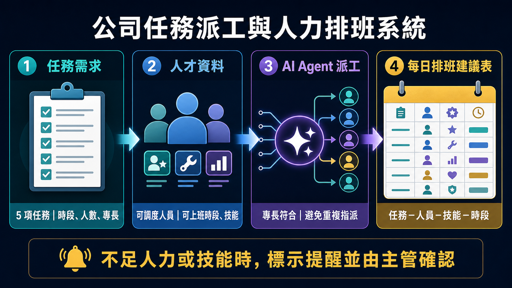
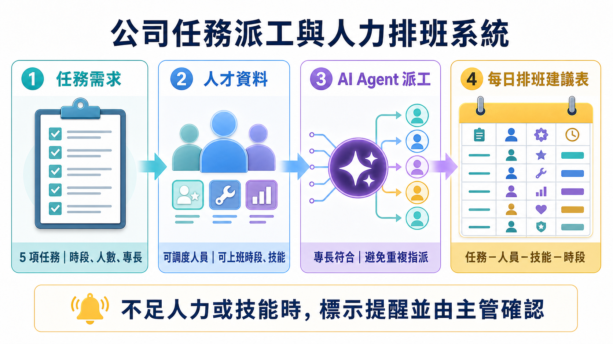

本課程是一門為商管學院大學生設計的實作導向短期課程，重點不只是學習如何向 AI 下指令，而是練習將真實商管問題轉成清楚的需求、限制與完成標準，並與 AI Agent 一起完成可用的數位作品。
課程將從生成式 AI、AI Agent、Vibe Coding 與 VS Code 的基本認識開始，逐步帶領學生完成商管情境的靜態網頁、智慧網頁資料蒐集工具，以及具備使用者端與管理端的前後端小型系統。學生也會學習如何檢查成果、修正問題，並將驗證過的開發流程整理為可重複使用的 Skill。
本系列課程希望帶領商管學院非資訊背景學生突破技術門檻，從熟悉的商管問題開始，逐步探索 AI Agent、Vibe Coding 與未來專題實作。學生不必先成為工程師，而是學習如何界定需求、整理資料、與 AI 協作、測試成果並持續改進；最後把想法轉化為可操作的網頁工具、資料蒐集流程或小型系統。這些能力將成為未來課程專題、職場問題解決與跨領域合作的重要基礎。
講師介紹
楊榮林 教授
南臺科技大學電子工程系專任教授
楊榮林教授過去七年間六次獲得教育部教學實踐研究計畫補助肯定，並兩度榮獲年度績優計畫殊榮。近期更以 AI 融入專業課程的創新教學方法與教材設計，獲得 113 學年度教學實踐研究計畫績優計畫肯定，累積了 AI 融入高等教育教學的豐富實務經驗。
自 114 學年度起，楊教授持續將生成式人工智慧與 AI Agent 技術融入課程教學及學生課後學習，陸續開發多項 AI 教學輔助數位工具，並在課堂中實際應用，獲得學生正面回饋。於 114 學年度第二學期，楊教授獲聘擔任教育部智慧雨林計畫 AI 相關課程與工作坊的專任設計及課程執行講師，暑假期間開設九場專門為非工程學系教師設計的 AI Agent 工作坊，與全國各地大學教師交流。2026 年暑期工作坊獲得教師熱烈回應與推薦，智慧雨林子計畫主持人因而決定加開場次，並再次邀請楊教授設計更進階的 AI Agent 應用課程，分享 AI 融入課程設計與專業學習的實務方法。
學生最後能帶走什麼？
重點不是只完成一次作品，而是建立能在不同商管情境重複使用的 AI 協作能力。
把需求說清楚
能說明使用者、目標、資料、限制與完成標準，讓 AI Agent 有足夠脈絡執行工作。
完成可見作品
能和 AI Agent 協作，完成一個具備商管情境的靜態網頁應用。
建立智慧網頁資料蒐集 Skill
能從公開、可合理使用的網頁擷取指定資料，並在版面改變後重新驗證成果。
重現與分享系統
能將前後端小型系統的規格、限制與驗收方式整理成可分享的 Skill。
四堂課設計
每堂課包含兩個九十分鐘模組以及額外作品展示及問題討論時間。課程認識並應用 AI Agent（Codex、Claude Code、GitHub Copilot 或 Antigravity 等工具）；實作時由教師依課堂環境指定主要工具。
第一堂｜建立共同語言
認識 AI、AI Agent 與 Vibe Coding
生成式 AI、聊天機器人與 AI Agent 的差別；隱私、來源、授權與驗證。
認識 VS Code、專案資料夾與 Vibe Coding；完成第一個簡單靜態網頁。
第二堂｜完成第一個應用
Vibe Coding 商管靜態網頁
以「校園活動行銷與營運小幫手」為例，將商管需求轉為網頁規格。
建立活動或產品介紹、行銷訊息、成本試算與 KPI 儀表板；測試並修正。
第三堂｜從網頁取得可用資訊
智慧網頁資料蒐集 Skill
將公開活動、商品促銷、競品價格或職缺資訊，轉成資料來源、欄位與驗收規格。
建立可調適的智慧爬蟲 Skill；面對模擬網頁改版，重新定位、蒐集與驗證資料。
第四堂｜讓作品成為小型系統
前後端系統與可分享 Skill
以「公司任務派工與人力排班系統」為例，運用 AI Agent 與 Vibe Coding 完成前端介面、伺服端與簡易資料庫。
整理系統規格、執行方式與驗收條件；封裝成能供他人重建的完整 Skill。


課前準備
學生需準備
- 筆記型電腦與穩定網路。
- 可使用的 AI Agent 帳號：Codex、Claude Code、GitHub Copilot 或 Antigravity。
- 安裝 VS Code，或依教師提供的環境說明完成設定。